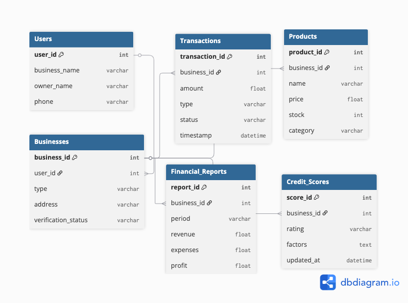

Platform Fintech Terintegrasi untuk UMKM Indonesia
FinTech Solution adalah platform fintech terintegrasi yang dirancang khusus untuk UMKM (Usaha Mikro, Kecil, dan Menengah) di Indonesia. Platform ini menyediakan layanan pembayaran digital, manajemen keuangan, dan akses kredit mikro dengan proses yang mudah, aman, dan terjangkau.
Dengan memahami tantangan yang dihadapi UMKM dalam akses finansial dan teknologi, FinTech Solution hadir sebagai solusi komprehensif yang menggabungkan kemudahan pembayaran digital, sistem manajemen keuangan yang intuitif, dan akses permodalan yang fair. Platform ini juga dilengkapi dengan fitur analytics dan reporting untuk membantu UMKM membuat keputusan bisnis yang lebih baik.
Business Registration → KYC Verification → Dashboard Setup → Payment Gateway Integration → Transaction Processing → Financial Recording → Analytics & Reporting → Credit Scoring → Loan Application

Customer Order → Payment Selection → Gateway Processing → Payment Verification → Transaction Recording → Merchant Notification → Settlement Process
Revenue Streams: Monthly subscription, transaction fees (0.7-2.9%), premium features, dan partnership commissions.
FinTech Solution mematuhi semua regulasi yang berlaku di Indonesia:
Status: Beta Testing
Current Phase: Closed Beta dengan 500+ merchant partner
Beta Results: 94% user satisfaction, 40% increase in merchant revenue
Public Launch: Q1 2025
Target Users: 10,000 active merchants dalam tahun pertama